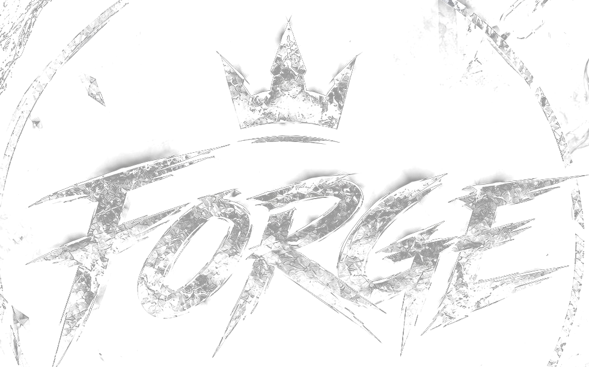

FORGE ARCHIVE
Şehirdeki ekipleri, yapıları ve bağlantıları keşfet.
OLUŞUM ARŞİVİ
Los Santos merkezli aile yapılanması.
Forge çevresindeki bağlantılarda yer alan motorcu oluşumu.
South Side’taki oluşumlar arasında yer alan ekip.